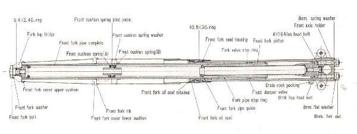
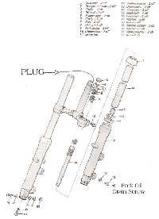

Every small bump is felt sharply through the handlebar, as if the forks do not move enough. Possible causes: front tyre pressure too high, forks binding because they are twisted in the clamps or a tube is bent, too much oil or oil that is too thick, dirty or dry seals and bushes, or the fork is actually bottoming on a bigger bump (which feels like a hard knock).
Is it safe to ride?
Ride with care. A fork that binds can lose grip over bumps in corners.
Quick checks first
- Check front tyre pressure (K-Light 125: 190 ± 10 kPa cold).
- Hold the front brake and push the bars down: smooth, or does it stick?
- Was the fork serviced recently? Too much oil or the wrong grade is a common cause.
- Was the bike dropped recently?
- Thicker oil makes the fork action stiffer. Check that the oil grade and level match the manual.
Diagnose it step by step
1Is the front tyre pressure too high?
- Yes: set it with Check tyre pressure.
- No: go to step 2.
2When you push the forks down with the brake on, do they stick, then jump?
- Yes: they are binding. Go to Front forks feel sticky or stiff.
- No: go to step 3.
3Is the harshness a hard knock on bigger bumps only?
- Yes: the fork is bottoming. Go to Front forks bottom out.
- No: go to step 4.
4Were the forks recently serviced or the oil changed?
- Yes: too much oil, or oil thicker than specified, makes the fork harsh. Ask the workshop to check the amount and grade against the manual (K-Light 125: 285 ± 2 ml per leg, 46#). See Replace fork oil and seals.
- No: go to step 5.
5Are the dust seals dry and dirty, or the tubes rusty?
- Yes: clean the tubes and seals with Clean fork seals. Rusty tubes need a workshop.
- No: go to step 6.
6Does the bike sit high at the front, with very little sag?
- Check with Measure suspension sag. Very little sag with a normal rider can mean wrong springs or spacers were fitted. Workshop.
Causes, most likely first
| Cause | How to confirm | Fix |
|---|---|---|
| Tyre pressure too high | Gauge reading | Check tyre pressure |
| Forks binding (twisted, bent) | Sticky movement | Align the front wheel, forks and handlebar |
| Too much or too thick oil | After service | Replace fork oil and seals |
| Dry, dirty seals | Dirt at seals | Clean fork seals |
| Bottoming on big bumps | Hard knock | See Front forks bottom out |
| Wrong springs or spacers | Very little sag | Workshop |
Reference values (K-Light 125)
| Item | Value | Source |
|---|---|---|
| Front tyre cold pressure | 190 ± 10 kPa | K-Light 125 manual, PDF p. 71 |
| Fork oil per leg | 285 ± 2 ml, grade 46# | K-Light 125 manual, PDF p. 156 |